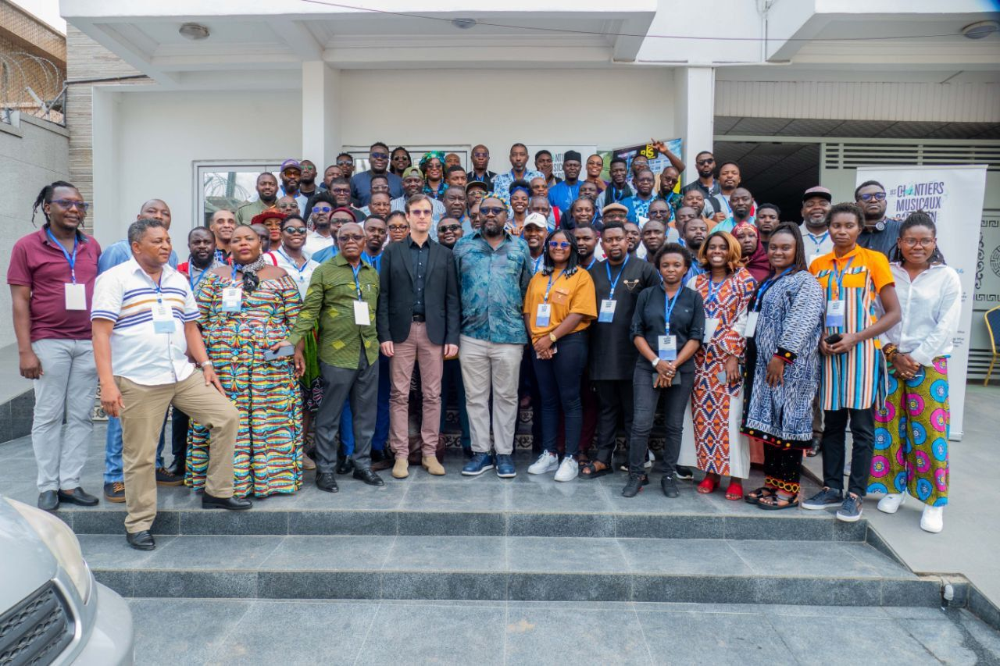
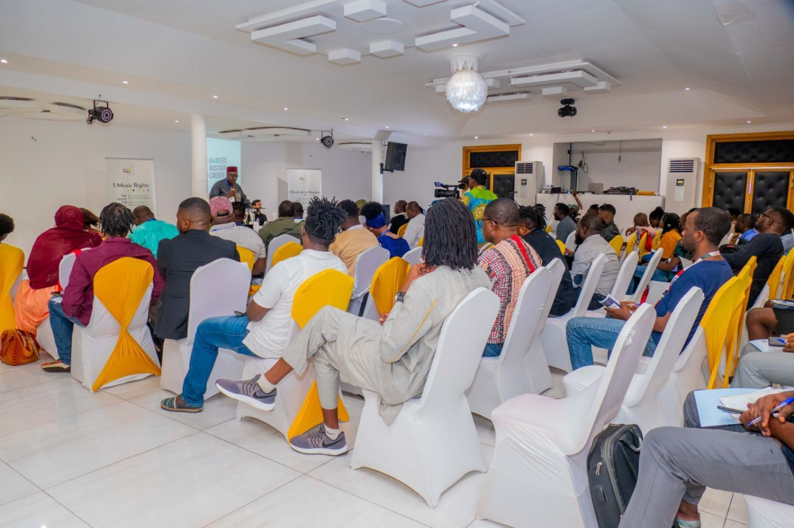
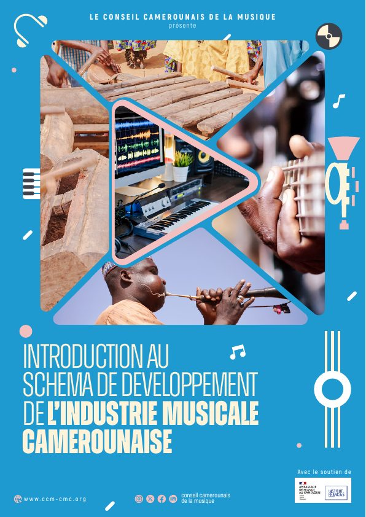
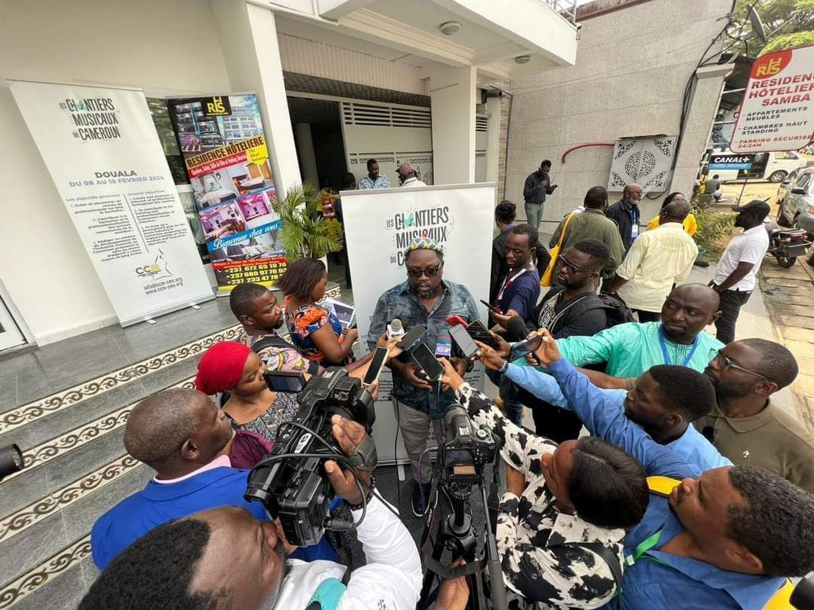
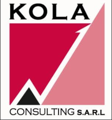
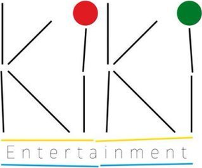

Unite
A network of professionals across the country, bringing associations and companies together.
Founded in Douala in 2009
The Cameroon Music Council brings together musicians, producers, broadcasters, promoters and researchers, and carries their voice to national and international institutions.


The Cameroon Music Worksites, Douala and Yaoundé, 2024
3,199
music professionals listed in the CCM database
204
rhythms from the heritage of the four cultural areas
10
regions represented at the Music Worksites
12
international experts who came to share their experience
204 rhythms identified in the heritage of the Fang-Beti, Sawa, Grassfields and Sudano-Sahelian areas.
The institution
Admitted to the International Music Council in 2003, Cameroon created, at the Council's request, a dedicated national association: the CCM, registered in Douala on 14 September 2009.
Its mission: to structure the music industry while ensuring that its players thrive, to document and promote the heritage, to encourage music education for young people, and to defend the status and rights of musicians.
A network of professionals across the country, bringing associations and companies together.
Seminars, workshops and expert meetings to professionalise the sector.
A music observatory that produces data and technical arguments.
For music to be included in the National Development Strategy (SND30).
The world has changed
28.6 bn USD
global recorded music revenue in 2023, the 9th consecutive year of growth
667 M
paid streaming subscribers worldwide
+24.7 %
revenue growth in sub-Saharan Africa: the fastest in the world
On Boomplay, 1.5 million Cameroonians are registered.
On Spotify, Apple Music and Deezer combined: 4 700 paid accounts.
Each dot represents about 4,700 Boomplay users. Only one corresponds to paying subscribers. A huge revenue potential, still to be won.
Sources: IFPI, Global Music Report 2024, cited by the CCM (2024).

Flagship programme · 2024
More than six months of consultation to assess the sector, strengthen its players and lay the foundations of a development plan. Supported by the French Embassy in Cameroon and the Institut français, through the Team France Fund.
64
professionals
6
months of work
3
stages
Member directory
54 CCM card-holding members, from Maroua to Kribi: promoters, producers, journalists, publishers. Search by region, city and profession.
Browse the directory (French)On video
From the legacy of makossa to the development plan: the findings, the figures and the way forward put forward by the CCM.
Music Observatory
Findings from the study carried out in the first half of 2024 in Douala, Yaoundé, Bafoussam and Garoua, and from the CCM's mapping of 3,199 professionals.
Source: CCM, Introduction to the Development Plan of the Cameroonian Music Industry, 2024 (CCM database, ccm-cmc.org/data portal).
Market simulator
12 million Cameroonians aged 10 to 74 could spend 50 or 100 FCFA per song, the price charged by local download vendors. Pick a scenario.
Songs bought per person per year
Price per song
Scenario
in revenue per year
12,027,032 consumers × × FCFA
26 996
bars with sound systems: as many venues where music is played
6 in 10
cultural operators are set up as officially recognised organisations
5
workers on average per music organisation
4 in 10
cultural entrepreneurs make no profit
Publications

Mapping of professionals, listening habits, value chains, regulatory framework and recommendations.
Download (French)
The English edition, for international partners and English-speaking regions.
DownloadGovernance
Registered under no. 133/2009/RDDA/C19/BAPP, the CCM amended its statutes and elected its executive board at the general assemblies held in Yaoundé on 31 March 2021.
President
Didier Ngadjui Toko
Music sector expert, Africa-Caribbean-Pacific region
In pictures
International reach
Created at the initiative of the International Music Council, the CCM upholds the five music rights proclaimed by the IMC in 2001 and supports professionals at major international events.
MIDEM
Cannes, France
WOMEX
World music expo
Visa For Music
Rabat, Morocco
ACCES
Music In Africa Conference
News

June 2024 · Publications

March 2024 · Training
February 2024 · Programmes
Membership
Any individual or organisation working in music can join and receive a CCM membership card: to train, meet other players in the sector and help structure it.
Payment via Orange Money 690 939 633 · MTN MoMo 653 807 653. Voluntary support contributions, in kind or financial, are welcome.
Conseil Camerounais de la Musique
Membership card
First name LAST NAME
Your music profession
Conseil Camerounais
de la Musique
www.ccm-cmc.org
Signature of the CCM President
Partners


